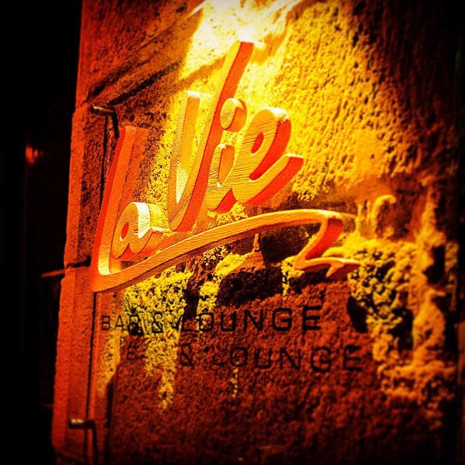

Заклад функціонує при готелі "Рудольфо", й працює цілодобово. Інтер’єр основної зони, з м’якими диванчиками, контактною барною стійкою, дизайнерським освітленням виконано в темних тонах. Ще одна зона “La Vie” - у світлих тонах, з повністю скляним дахом. Для ділових зустрічей, коктейльних вечірок, дегустацій, святкувань днів народжень до 70 гостей. Страви європейської кухні та коктейльне меню, тематичні вечірки та дегустації у супроводі сомельє, ввечері - якісна музика в живому виконанні від львівських співаків.